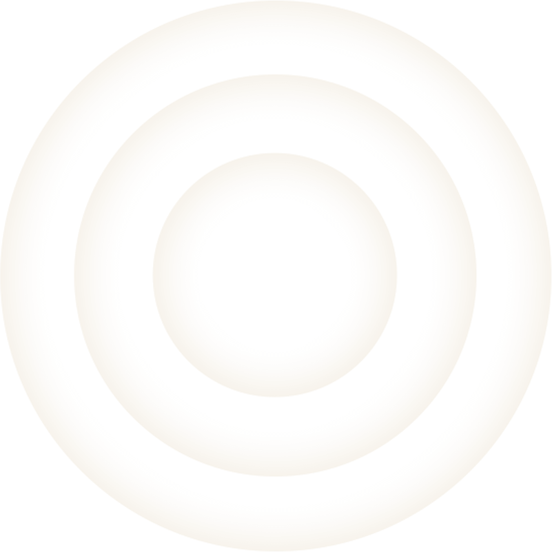

PS: 仅限原生HTML-input元素，组件请使用对应API
<input type="radio" name="testradio" value="" />
$('input[name="testradio"]:checked').val();
//选中:
$('input[name="testradio"]').eq(0).prop('checked',true); //根据下标
$('input[name="testradio"][value="111"]').prop('checked',true); //根据value值
<input type="checkbox" name="testcheckbox" value="" />
var ids_ =[];
$('input[name="testcheckbox"]:checked').each(function(){
var t_= $(this);
ids_.push(t_.val());
});
return ids_.join(','); //用，号分割；
//选中:
$('input[name="testcheckbox"]').eq(0).prop('checked',true); //根据下标
$('input[name="testcheckbox"][value="111"]').prop('checked',true); //根据value值
<select id="testSelect"><option value="">text</option></select>
$('#testSelect').val(); //获取当前选中项的value
$("#testSelect").find("option:selected").text(); // 获取当前选中项的text
$(".selector1").change(function(){ //select的级联
// 先清空第二个
$(".selector2").empty();
// 实际的应用中，这里的option一般都是用循环生成多个了
var option = $("<option>").val(1).text("pxx");
$(".selector2").append(option);
});
//选中:
$('#testSelect').val('111'); //设置value为111的项选中
//多选框赋值：
$("#testSelect").val(["111","222"]);//设置value为111和222的项选中
PS:序列化表单内容，用于 Ajax 请求。
<form>
<select name="single">
<option>Single</option>
<option>Single2</option>
</select>
<select name="multiple" multiple="multiple">
<option selected="selected">Multiple</option>
<option>Multiple2</option>
<option selected="selected">Multiple3</option>
</select><br/>
<input type="checkbox" name="check" value="check1"/> check1
<input type="checkbox" name="check" value="check2" checked="checked"/> check2
<input type="checkbox" name="check" value="check3" checked="checked"/> check3
<input type="radio" name="radio" value="radio1" checked="checked"/> radio1
<input type="radio" name="radio" value="radio2"/> radio2
</form>
1、平台 form序列化方法：（推荐，对象）
COM_TOOLS.serializeObject(form);
//输出：
{single: "Single", multiple: "Multiple,Multiple3", check: "check2,check3", radio: "radio1"}
2、jQuery form序列化方法（url参数字符串）
$("form").serialize();
//输出： single=Single&multiple=Multiple&multiple=Multiple3&check=check2&check=check3&radio=radio1
3、jQuery form序列化方法（数组对象）
$("form").serializeArray();
//输出：
[
{name: 'firstname', value: 'Hello'},
{name: 'lastname', value: 'World'},
{name: 'alias'}, // 值为空
{name: 'multiple',value: 'Multiple'},//多选框
{name: 'multiple',value: 'Multiple3'},
{name: 'check',value: 'check2'},//复选框
{name: 'check',value: 'check3'}
]
获取子页面的window对象
$('#frameid')[0].contentWindow;
Window.frames[iframeName];
Window.iframeName
获取子页面的DOM
$(window.frames["iframeName"].document).find('#id')
$('#iframeId').contents().find('#id');
子操作父类
parent.$('#id').val();
$('#id', parent.document).val();
function Request_param(strName){
var strHref = location.search ;
var intPos = strHref.indexOf('?');
if(intPos ===-1){return '';}
var strRight = strHref.substr(intPos + 1);
var arrTmp = strRight.split('&');
for(var i = 0; i < arrTmp.length; i ++ ){
var arrTemp = arrTmp[i].split('=');
if(arrTemp[0].toUpperCase() == strName.toUpperCase()){
if(i===arrTmp.length-1){
var sIndex = arrTemp[1].indexOf('#');
if(sIndex!==-1){arrTemp[1] = arrTemp[1].substring(0,sIndex);}
}
return arrTemp[1];
}
}
return '';
}
1.使用in关键字
function Fn(){
this.name='jim'
};
Fn.prototype.age='20';
var fn=new Fn();
'name' in fn; //-->true 判断自有属性
'age' in fn; //-->true 判断继承属性
'home' in fn; //-->false
2.使用对象的hasOwnProperty()方法 注：IE 5.5+、FireFox、Chrome、Safari、Opera等主流浏览器均支持该函数。
function Fn(){
this.name='jim'
};
Fn.prototype.age='20';
var fn=new Fn();
fn.hasOwnProperty('name'); //-->true 判断自有属性
fn.hasOwnProperty('age'); //-->false 不能判断继承属性
fn.hasOwnProperty('home'); //-->false
区别：
in可以获取object的所有属性,包括自定义属性以及原型链属性。
hasOwnProperty()只能获取自定义属性，无法获取原型链属性。
ps：滚动条滑动底部延迟加载
(function(){//匿名函数自调 避免全局污染
var timer,xhr;
$(window).scroll(function(){
if(timer){
clearTimeout(timer);
}
timer=setTimeout(function(){
if($(window).scrollTop()>=$(document).height()-$(window).height()){
if(xhr!=null){xhr.abort();}/*XMLHttpRequest对象的abort()终止未完成的请求*/
xhr=$.ajax({
url:"test.txt",
success:function(data){
$("body").append("<h3>"+data+"</h3>")
}
})
}
},100)
})
})();
/**
* @param {Object} <input type="file"> fileList对象 ; 例如：this.files[0]
*/
function getObjectURL(file) {
var url = null;
if(window.createObjectURL != undefined) { // basic
url = window.createObjectURL(file);
} else if(window.URL != undefined) { // mozilla(firefox)
url = window.URL.createObjectURL(file);
} else if(window.webkitURL != undefined) { // webkit or chrome
url = window.webkitURL.createObjectURL(file);
}
return url;
}
注：行内元素与块元素都可实现全屏效果
/**
* 进入全屏
* @param {String} element dom元素
*/
function enterfullscreen(element) {
if (element.requestFullscreen) {
element.requestFullscreen();
}
else if (element.mozRequestFullScreen) {
element.mozRequestFullScreen();//FireFox
}
else if (element.webkitRequestFullScreen) {
element.webkitRequestFullScreen();//Chrome等
}
else if (element.msRequestFullscreen) {
element.msRequestFullscreen();//IE11
}
}
/**
* 退出全屏
*/
function exitfullscreen() {
if (document.exitFullscreen) {
document.exitFullscreen();
}
else if (document.mozCancelFullScreen) {
document.mozCancelFullScreen();
}
else if (document.webkitCancelFullScreen) {
document.webkitCancelFullScreen();
}
else if (document.msExitFullscreen) {
document.msExitFullscreen();
}
}
PS:target的作用是让form提交后在什么窗口下打开，使用iframe 但是将iframe设为看不见的，最终form表单会被提交到目标iframe中 ，但iframe被我们设置成看不见的，这样form提交时就刷新不跳转。
<form class="form-horizontal" method="post" target="posthere" action="user-login" onsubmit="return checkRegForm()"></form>
<iframe name="posthere" width="0" height="0" frameborder="0"></iframe>
注意：
1、form的target的属性值必须与目标iframe的name属性值相同；
2、需接收处理action返回结果时，必须满足基于iframe同源策略限制；另外js回调函数处理返回数据；例如：
Action：返回
<script type="text/javascript">
parent.yourFun(XXX);
</script>
当前页面中定义该回调函数：
<script type="text/javascript">
function yourFun(XXX){
//TODO
}
</script>
接口数据提交建议使用ajax，跨域-get请求使用jsonp，跨域-POST请求使用iframe同源策略或CORS（需浏览器及服务端支持）
注：由于浏览器安全限制，一般情况下直接在js中打开（非用户直接触发）弹窗（window.open 或 form target=_blank）会被拦截;
PS:
1、非用户直接触发的行为包括：ajax（异步）中的$("form").submit(); 或 window.open 行为；
2、用户直接触发的行为：
$("button").click(function(){
//$("form").submit();
//window.open
});
解决方案：
1、改为用户直接触发的方式；
2、form ,是否可去掉target=_blank属性；
3、window.open,在点击后先打开空白页，之后再修改地址
<button onclick="test()">点击</button>
<script type="text/javascript">
function test(){
var frame=window.open("about:blank","_blank");
$.get("/",function(){
frame.location="https://www.baidu.com";
});
}
</script>
问题说明：
1)默认情况下，单个输入框，无论按钮的type="submit"还是type="button"类型，回车即提交。
2)当type="submit"时，无论有几个type="text"输入框，回车均表示提交。（<button>按钮默认的type为submit，IE下默认为type=button，火狐、Chrome默认为type=submit）
3)Type=“image”的input ，效果也是等同于type=“submit”
4)当type="button"时，且存在多个输入框，回车不提交。
解决方案：
1)解决单个输入框的回车即提交问题，可以增加一个隐藏的input="text" display='none'; 然后type类型为button。
2)在form表单或input中加入：onkeydown="if(event.keyCode==13){return false;}"
ps:通过减少页面中的元素可以减少 HTTP请求的次数,这是提高网页速度的关键步骤。
1.合并文件是通过把所有的脚本放到一个文件中来减少 HTTP请求的方法，如可以简单地把所有的 CSS文件都放入一个样式表中; 2.CSS Sprites是减少图像请求的有效方法。把所有的背景图像都放到一个图片文件中，然后通过 CSS的 background-image和 background-position属性来显示图片的不同部分； 3.内联图像是使用 data:URL scheme的方法把图像数据加载页面中。这可能会增加页面的大 小。把内联图像放到样式表（可缓存）中可以减少 HTTP请求同时又避免增加页面文件的大小。但是内联图像现在还没有得到主流浏览器的 支持。
ps:循环中多次查找同一个DOM对象，可将DOM对象缓存进一个局部变量
案例1：
for(var i=0;i<data.length;i++){
var $option=$("<option></option>");
$option.attr("value",data[i].id);
$option.text(data[i].name);
$("#cityCode").append($option);
}
案例2:
var str="";
for(var i=0;i<data.length;i++){
str+='<option value="'+data[i].id+'">'+data[i].name+'</option>';
}
$("#cityCode").append(str);
比较:二者在差异在于构建顺序的不同;第一种方式循环里每次都对父节点对象进行操作,当数据量大的时候,这种方式性能低下;第二种方式先由内向外生成拼接好的字符串,再一次性append到父节点对象;这样做的目的是尽可能减少浏览器重新计算页面布局的次数,总结为一句话就是越晚执行appendChild越好;
<html>
<head>
<meta http-equiv="pragma" content="no-cache">//禁止浏览器从本地计算机中的缓存中访问页面内容
<meta http-equiv="Refresh" content="0" URL="http://chunwan.cntv.cn">// "Refresh":表示刷新动作；"0"表示延迟时间；"URL"：表示跳转到的地址
<title></title>
</head>
</html>
在iPhone 手机上默认值是（电话号码显示为拨号的超链接）： <meta name="format-detection" content="telephone=yes"/> 可将telephone=no，则手机号码不被显示为拨号链接 <meta name="format-detection" content="telephone=no"/>
IE浏览器： <meta http-equiv="X-UA-Compatible" content="IE=edge,chrome=1"/> IE=edge：使用edge（最高）内核渲染； chrome=1：这样写可以达到的效果是如果安装了GCF（Google Chrome Frame 谷歌内嵌浏览器框架的简称），则使用GCF来渲染页面，如果没安装GCF，则使用最高版本的IE内核进行渲染。这个插件可以让用户在浏览网页时，使用Google Chrome浏览器内核，而且支持IE6、7、8等多个版本的IE浏览器。 360浏览器： <meta name="renderer" content="webkit"> 指定按照极速模式 <meta name="renderer" content="ie-comp"> 指定按照ie兼容内核 <meta name="renderer" content="ie-stand"> 指定按照ie标准内核 Content的取值为webkit/ie-comp/ie-stand之一,区分大小写,分别代表使用webkit内核、IE兼容内核、IE标准内核
1、必须以字母 A-Z 或 a-z 开头
2、其后的字符：字母(A-Za-z)、数字(0-9)、连字符("-")、下划线("_")、冒号(":") 以及点号(".")
3、值对大小写敏感
备注：点号(".")不能应用于$(selector)
部分兼容，适用于大部分最新版PC端浏览器，移动端兼容较差（ios- Safari 不支持）；必须场景下，请使用JS处理； 添加属性： autofocus="autofocus"
原文地址：http://blog.csdn.net/freshlover/article/details/11579669
1.1容器内垂直居中
.container{position:relative;}
.center-child{
width:50%;
height:50%;
overflow:auto;
margin:auto;
position:absolute;
top:0;left:0;bottom:0;right:0;
}
1.2视区内垂直居中
.container{position:relative;}
.center-child{
width:50%;
height:50%;
overflow:auto;
margin:auto;
position:fixed;
top:0;left:0;bottom:0;right:0;
z-index:999;
}
1.3侧边栏垂直居中
.container{position:relative;}
.center-child{ //左居中
width:50%;
height:50%;
overflow:auto;
margin:auto;
position:absolute;
top:0;left:20px;bottom:0;right:auto;
text-align:left;
}
.center-child{ //右居中
width:50%;
height:50%;
overflow:auto;
margin:auto;
position:absolute;
top:0;left:auto;bottom:0;right:20px;
text-align:right;
}
1.4 响应式居中
.container{
position:relative;
width:100%;
height:800px;
}
.center-child{
width:50%;
height:50%; //子元素设置高度百分比 也要设置其父元素的高度
min-width:200px;
min-height:400px;
padding:40px;
overflow:auto;
margin:auto;
position:absolute;
top:0;left:0;bottom:0;right:0;
}
1.5 溢出居中
.container{position:relative;}
.center-child{
width:50%;
height:50%;
max-height:100%;
overflow:auto;
margin:auto;
position:absolute;
top:0;left:0;bottom:0;right:0;
}
1.6 重绘居中
.container{position:relative;}
.center-child{
min-width:20%;
max-width:80%;
min-height:20%;
max-height:80%;
resize:both;
overflow:auto;
transition:all .2s ease-in-out;
margin:auto;
position:absolute;
top:0;left:0;bottom:0;right:0;
}
1.7图片居中
.container{position:relative;}
.center-child{
width:50%;
max-height:100%;
overflow:auto;
margin:auto;
position:absolute;
top:0;left:0;bottom:0;right:0;
}
PS:计算方式和box-sizing:border-box有关（不使用box-sizing: border-box时包括padding）；
.container{position:relative;}
.center-child{ //box-sizing:content-box;
width: 300px;
height: 200px;
padding: 20px;
position: absolute;
top: 50%; left: 50%;
margin-left: -170px; /* (width + padding)/2 */
margin-top: -120px; /* (height + padding)/2 */
}
.center-child{ //box-sizing:border-box;
width: 300px;
height: 200px;
padding: 20px;
position: absolute;
top: 50%; left: 50%;
margin-left: -150px;
margin-top: -100px;
}
.container{position:relative;}
.center-child{
width: 50%;
margin: auto;
position: absolute;
top: 50%; left: 50%;
-webkit-transform: translate(-50%,-50%);
-ms-transform: translate(-50%,-50%);
transform: translate(-50%,-50%);
}
.container{display:table;}
.container .parent{display:table-cell;vertical-align:middle;}
.container .parent .center-child{width:50%;margin:0 auto;}
.container {
text-align: center;
overflow: auto;
}
.container::after{
content:””;
width:0;
height:100%;
display: inline-block;
vertical-align: middle;
margin-left: -0.25em; //消除两个display:inline-block之间的空隙，谷歌浏览器下为4px;
}
.center-child{
display:inline-block;
vertical-align:middle;
max-width: 99%;
/* max-width: calc(100% - 0.25em) /* Only for IE9+ */
}
container {
width:100%;
height:800px;
display:flex;
display:-webkit-flex;
display: -ms-flexbox;
justify-content: center;
-webkit-justify-content: center;
-ms-justify-content: center;
align-items: center;
-webkit-align-items:center;
-ms-align-items:center;
}
.center-child{
width:50%;
height:50%;
}
例：<a href="#" class="zong"><span>声音专业委员会</span><i></i></a>
a{display:inline-block; height:90px; width:90px;}
span{ display:inline-block; vertical-align:middle;} //必须
i{ height:100%; display:inline-block; vertical-align:middle;} //必须
注：该方法同样适用于图片垂直居中，需要在父元素中加text-align:center使其水平居中
input::-webkit-input-placeholder{color:#999; opacity: 1;}
input:-moz-placeholder{color:#999; opacity: 1;}
input::-moz-placeholder{color:#999; opacity: 1;}
input:-ms-input-placeholder{color:#999; opacity: 1;}
/* 注意：火狐下默认含有opacity属性 */
注:CSS属性值与属性名之间有空格，css动画将不会有效果！！！
@keyframes wave{
0%{
-webkit-transform:scale(0.5);
transform:scale(0.5);
opacity:0;
filter:alpha(opacity=0)\9;
}
50%{
opacity:1;
filter:alpha(opacity=100)\9;
}
100%{
-webkit-transform:scale(1);
transform:scale(1);
opacity:0;
}
}

@keyframes twinkle{
from{
opacity:0.5;
}
20%{
opacity:0;
}
40%{
opacity:0.8;
}
80%{
opacity:0;
}
100%{
opacity:1;
}
}
ps:针对元素的只读、禁用、选中，尽量使用prop 替换 attr(存在已知JQuery版本的兼容问题)
注意：1.6版本以后使用attr()获取这些属性的返回值为String类型，如果被选中(或禁用)就返回checked、selected或disabled，否则(即元素节点没有该属性)返回undefined;prop()则返回bool类型的true/false;
<div id="message" class="test" data-id="123"></div>
<input type="radio" name="name1" checked/>radio1
<input type="radio" name="name1" />radio1
<script>
$("#message").attr("data-id");/*自定义属性建议使用attr()*/
$("input[name='name1']").prop("checked");/*返回bool类型的建议使用prop()*/
</script>
"YYYY/MM/DD"所有浏览器兼容的日期格式。
"YYYY-MM-DD"日期格式是无法被各个浏览器使用new Date(str)来正确生成日期对象的，部分浏览器仍存在兼容问题，故不建议使用。
日期格式1：new Date("2018-3-2");
IE下全部不兼容：
ie9+(Invalid Date);
ie678(NaN);
ps：IE支持的日期格式为new Date(yyyy,mm-1,dd);//均为数字类型，且月份减1;
chrome 兼容
firefox 兼容
日期格式2：new Date("2018/3/2");//全部浏览器兼容；
建议如下日期格式：
new Date("month dd,yyyy hh:mm:ss");
new Date("month dd,yyyy");
new Date(yyyy,mth,dd,hh,mm,ss);
new Date(yyyy,mth,dd);
new Date(ms);
new Date("yyyy/mm/dd");
month:用英文表示月份名称，从January到December
mth:用整数表示月份，从0（1月份）到11（12月份）
dd:表示一个月中的第几天，从1到31
小拓展：如何分别拿到"YYYY-MM-DD"日期字符串中的年月日？
var time="2018-3-6";
var arr=time.split(time.match(/\D+/g)[0]);
输出：["2018","3","6"];
ps：正则/\D+/g 查找非数字字符；match返回查找到的值而非位置；
尽量保证每个域下cookie个数小于30个，总大小不超过4KB(字节，多字节字符计算为两个字节)；或使用"localStroage"、"sessionStroage"代替cookie;
大量字符串拼接时，建议使用数组对象(push()),避免使用字符串拼接(+);最后通过join('')转化为字符串;其中html代码建议使用单引号包含,避免不必要的转义。
<select name="" id="cityCode"></select>
var arr=[];
var data=[ //模拟数据
{"name":"北京","id":111},
{"name":"上海","id":222},
{"name":"天津","id":333},
];
for(var i=0;i<data.length;i++){
arr.push('<option value="',data[i].id ,'">',data[i].name,'</option>');
}
$("#cityCode").html(arr.join(""));
PS：避免过多定义不必要的全局变量，变量名不能过于单一，或使用保留字
同一作用域内，多次使用的数据、对象建议定义为局部变量，例如： for(var i=0;i<arr.length;i++) 建议修改为:(一般数组长度只获取一次就可以了,不必要每次循环都获取一遍) for(var i=0,len=arr.length;i<len;i++)
编码：encodeURIComponent(URIstring) 解码decodeURIComponent(URIstring) 编码：encodeURI(URIstring) 解码decodeURI(URIstring) 如果 URI 组件中含有分隔符，比如 ? 和 #，则应当使用 encodeURIComponent() 方法分别对各组件进行编码。 ps:请注意 encodeURIComponent() 函数 与 encodeURI() 函数的区别之处，前者假定它的参数是 URI 的一部分（比如协议、主机名、路径或查询字符串）,因此 encodeURIComponent() 函数将转义用于分隔 URI 各个部分的标点符号。 <script> var str=",/?:@&=+$#"; encodeURI(str); 输出：,/?:@&=+$# encodeURIComponent(str); 输出：%2C%2F%3F%3A%40%26%3D%2B%24%23 </script>
Webkit内核浏览器video窗口不能全屏问题?
问题原因：播放器初始化层需要xdyplayer，并且该样式CSS层级过低；
解决方案1：不对播放器容器定义样式
<div class="your-class"> /* 播放器布局容器，定义宽高大小 */
<div class="xdyplayer" id="videoDIV" style="height:100%; width:100%;"></div> /* 禁止定义样式 */
</div>
解决方案2：
修改播放器样式(.xdyplayer:-webkit-full-screen)，添加!important属性；例如 width:100% !important;
无法获取播放器实例对象? 问题原因： 播放器切换时，每次都是重新生成一个实例，并且把旧的实例对象移动到head中，因此根据官方demo找播放器实例对象，再进行操作时，找不到当前实例， 解决方法： 根据当前初始化容器，寻找其内部的实例对象；
Label标签的for属性为空时引起“getElementById() 被传递了空字符串参数。”警告 解决方法： 删除for属性，或者维护正确的值；
操作地址：http://lianglei.net.cn/demo-ui/platform-help/htmldemo/ckeditor-demo.html 操作步骤： 点击表格按钮，在表格属性中指定需要的行数、列数、宽度及高度等，鼠标右键点击表格在弹出菜单中选择合并单元格，最后点击“源码”按钮，复制html片段即可